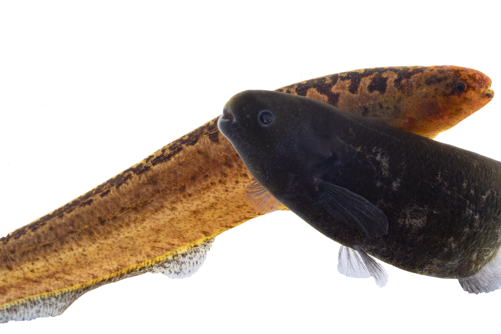

Search for a Sequence by ID
Currently EoRNA contains both the Barley RTD (BART) transcripts ( Searching for a gene ID will return all the transcript models from that gene region. You can go directly to a gene or transcript by using this search box:
Dataset Gene IDs # Genes # Transcripts Barley RTD BART1_0-u00001 60,444 177,240 HORVU 2017 HORVU1Hr1G000010 81,683 334,126
Introduction

Some quick example text to build on the card title and make up the bulk of the card's content.
BLAST Search
Use a nucleotide or protein sequence to find similar transcripts or genome sequence with the online BLAST search form.
Annotation Search
Search the annotation of the transcripts using keywords. Transcripts are annotated with best BLAST hits to the predicted proteins from rice, Brachypodium and Arabidopsis.
Bulk Download
Download datasets, including transcript sequences, GFF files, and GO annotation.
Translate a List
Translate a list of HORVU Genes to BART Genes based on their overlap on the reference genome. The whole comparison can be found here.
GO Enrichment
Details of how to do GO enrichment analysis with the BART dataset.